01 · Driven by Science
Medicines made with care, for every Indian family
We develop and market quality formulations across neurology, psychiatry, orthopaedics, gastroenterology and cardiovascular care.
We develop and market quality formulations across neurology, psychiatry, orthopaedics, gastroenterology and cardiovascular care.
Tablets, capsules, injectables, oral liquids, topicals and nutraceuticals, developed around real clinical needs.
A team built on accountability, teamwork and continuous learning, serving healthcare professionals since 2010.
Aspen Pharmaceuticals Pvt. Ltd. is an Indian pharmaceutical company established in 2010, with a focus on serving healthcare professionals through a relevant therapeutic portfolio, responsive service and responsible business practices.
Our foundation lies in a practical understanding of pharmaceutical care: the needs of clinicians, the importance of medicine availability and the responsibilities that come with serving patients. These principles continue to guide our development as we strengthen our portfolio and expand our presence.
We believe that sustainable growth in healthcare depends on trust. At Aspen, we seek to earn that trust through consistent engagement, transparent communication and a continuing commitment to improvement.
Aspen was founded by Anup Goyal, whose experience in pharmaceutical sales and marketing provided a close understanding of clinical needs and the healthcare market.
Since its establishment, the company has developed from an entrepreneurial venture into a growing pharmaceutical organisation. Our progress reflects the dedication of our people, the support of our business partners and the relationships we have built with healthcare professionals.
As we move forward, our focus remains on strengthening the business thoughtfully: developing relevant product offerings, supporting our teams and improving the way we serve our customers.
To support healthcare professionals and patient care through a clinically relevant pharmaceutical portfolio, a commitment to quality and dependable service.
To build a respected Indian pharmaceutical organisation recognised for therapeutic focus, responsible practices and lasting relationships across the healthcare community.
Aspen’s portfolio spans several therapeutic areas, supporting healthcare professionals across a range of clinical needs.
| Therapeutic Area | Portfolio Focus |
|---|---|
| Neurology | Medicines relevant to neurological care and the management of selected neurological conditions. |
| Psychiatry | Products supporting the treatment of mental health conditions under appropriate medical supervision. |
| Orthopaedics | A range addressing selected needs in musculoskeletal care, pain management and bone health. |
| Gastroenterology and Hepatology | Products relevant to digestive health and selected liver-related conditions. |
| Cardiovascular Care | Medicines supporting the management of selected cardiovascular conditions and associated risk factors. |
Our approach to portfolio development considers clinical relevance, prescribing needs and the practical requirements of healthcare delivery. We aim to build a coherent range that supports our therapeutic focus over time.
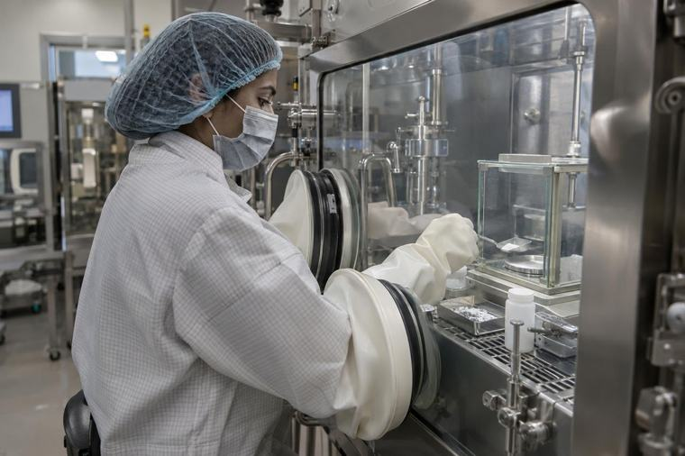
Quality is a central consideration in our approach to pharmaceutical business. We recognise that confidence in a medicine depends on the standards and processes behind it, as well as the reliability of the organisation that brings it to market.
Our commitment is to keep quality considerations at the centre of product selection, manufacturing relationships and operational decisions. We also recognise the importance of accurate product information, appropriate storage and handling, and responsible coordination across the supply chain.
Continuous improvement remains an essential part of this commitment as our organisation grows.
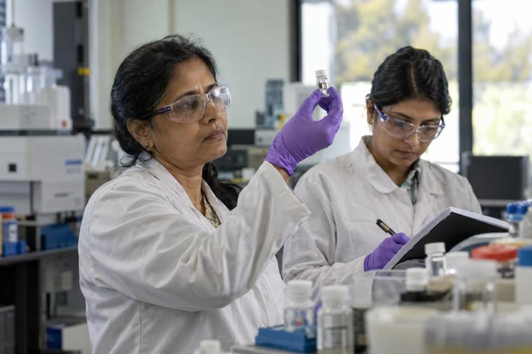
Our people are central to Aspen’s progress. Their knowledge, dedication and daily engagement with customers shape the quality of our relationships and the strength of our organisation.
We value accountability, teamwork and continuous learning. By encouraging professional development and a shared sense of responsibility, we seek to build a team capable of supporting the company’s long-term goals.
Healthcare professionals play a vital role in the appropriate use of medicines. Aspen seeks to support their work through professional engagement, clear product communication and responsive service.
Our approach is guided by respect for clinical judgment and the need for accurate, balanced information. We aim to build long-term relationships through meaningful dialogue and a practical understanding of the challenges faced in everyday clinical practice.
Patient welfare remains the underlying purpose of these relationships.
Aspen has developed its business presence across:
Our field teams and distribution partners connect the organisation with healthcare professionals and the pharmaceutical trade. These relationships help us understand local requirements, support product availability and respond to customer needs.
As we expand, our emphasis is on strengthening service and operational capability alongside geographic reach.
We consider the needs of patients and the responsibilities of healthcare when making business decisions.
We give quality due importance in our products, partnerships and operational processes.
We seek to act honestly, communicate clearly and uphold responsible business conduct.
We recognise the importance of accurate product information and informed professional engagement.
We take ownership of our work and seek to improve the way we deliver on our commitments.
We value the contribution of employees, healthcare professionals, manufacturing partners and distribution partners.
Aspen’s next phase of growth is centred on strengthening its therapeutic portfolio, developing its people, improving operational capability and extending its reach responsibly.
We remain committed to building a pharmaceutical business that combines commercial discipline with an understanding of its role in healthcare. Our ambition is to create lasting value for the professionals, partners and communities we serve.
Aspen Pharmaceuticals Pvt. Ltd. · Driven by Science, Inspired by Life.
A broad basket of finished dosage forms, made by certified manufacturing partners and priced for Indian patients.
Immediate, sustained and modified‑release tablets, including film‑coated and orally dispersible formats.
Hard gelatin, HPMC and soft‑gel capsules for faster absorption and better patient compliance.
Vials, ampoules and dry powder injections made under controlled sterile conditions.
Syrups, suspensions and dry‑syrup formulations designed for paediatric and geriatric care.
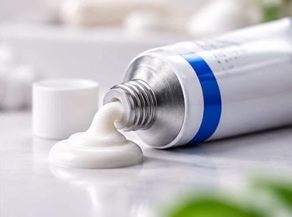
TOPICALSDermatological creams, gels and ointments for skin, wound and pain management.
Vitamins, minerals and nutritional supplements for everyday health and recovery.
Browse our brands by medical specialty, or search the full range.
| Brand | Composition | Category | Pack | Monograph |
|---|
Product information is intended for registered medical practitioners. Please refer to the full prescribing information.
Science-led innovation. Patient-focused design.
At Aspen Pharmaceuticals, our formulation development focus brings together pharmaceutical science and practical patient needs. We aim to develop dosage forms that address challenges in drug delivery, stability, palatability and ease of administration, with quality considerations guiding every stage.
From conventional formulations to complex delivery platforms, our priorities centre on translating therapeutic requirements into well-designed pharmaceutical products.
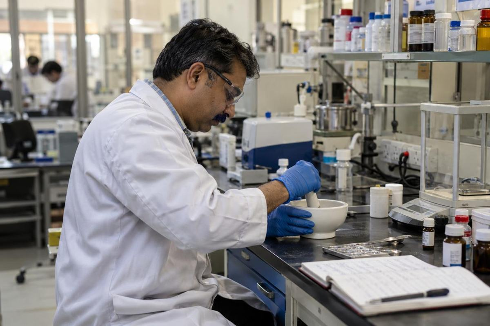
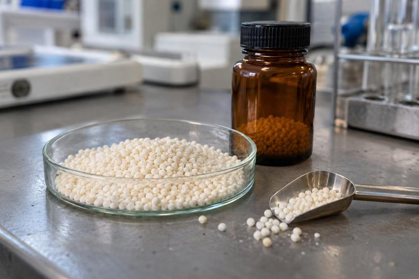
Exploring delivery approaches designed to optimise how an active ingredient is released and delivered, according to its properties and intended therapeutic use.
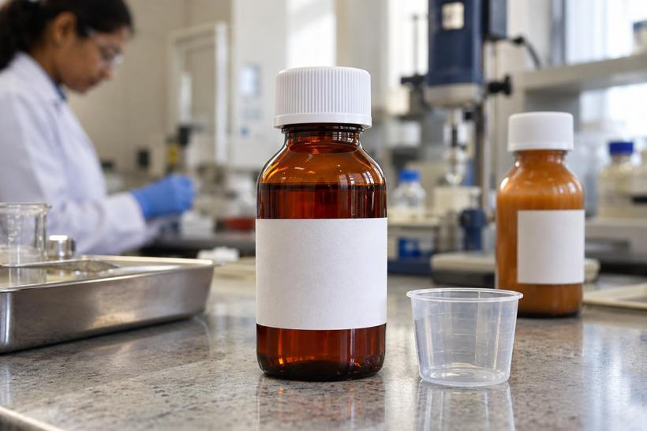
Addressing unpleasant taste through suitable formulation techniques, particularly for oral liquids, dispersible preparations and other dosage forms where palatability matters.
Investigating approaches to improve the solubility and dissolution of poorly soluble active ingredients, with the objective of supporting appropriate product performance.
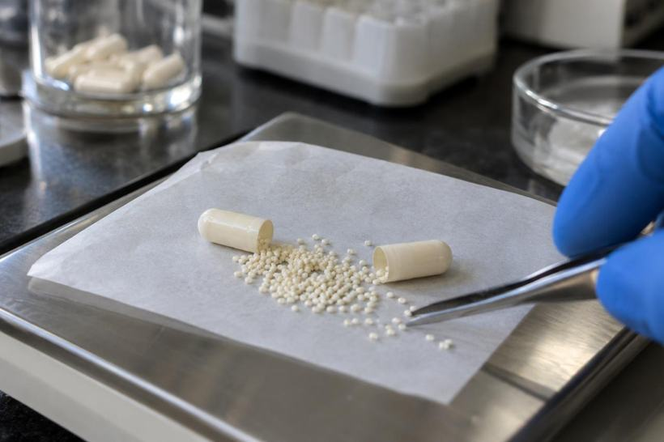
Developing formulation strategies for sustained, extended or delayed release, guided by the characteristics of the active ingredient and the intended dosing profile.
Planning appropriate evidence-generation pathways, including bioequivalence studies and clinical trials where required, in collaboration with qualified research partners and subject to applicable regulatory requirements.
Our formulation development interests span a broad range of pharmaceutical and nutraceutical dosage forms.
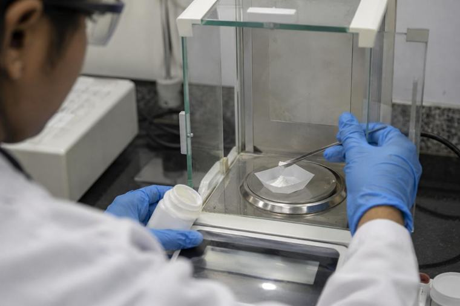
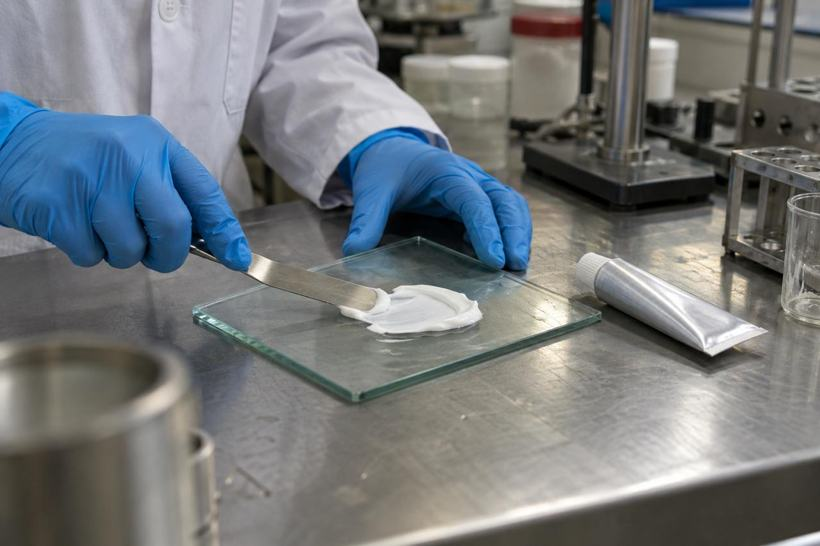
| Dosage category | Development focus |
|---|---|
| Oral solids | Tablets, capsules, dispersible formulations and modified-release preparations |
| Oral liquids | Solutions, suspensions and emulsions, with attention to palatability and physical stability |
| Sterile injectables | Formulation considerations for injectable products, including compatibility, stability and suitability for sterile processing |
| Topical preparations | Creams, ointments and gels, with attention to consistency, application and drug release |
| Hormonal formulations | Product-specific considerations for dose uniformity, stability and appropriate manufacturing controls |
| Nutraceuticals | Formulations designed around ingredient compatibility, stability and convenient administration |
Our development priorities also include advanced tablet architectures. The choice of platform is guided by scientific feasibility and the needs of the intended product.
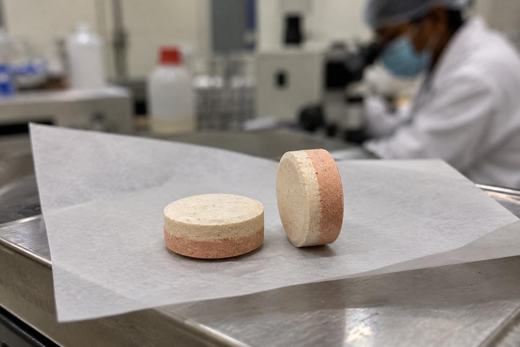
Separate layers that can accommodate different ingredients or release profiles.
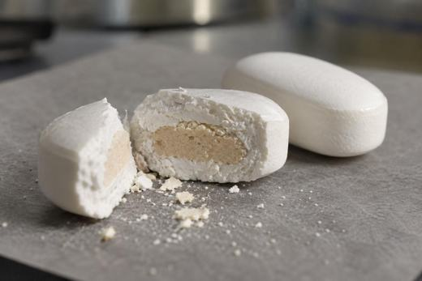
A core tablet within an outer tablet, enabling ingredient separation or tailored release.
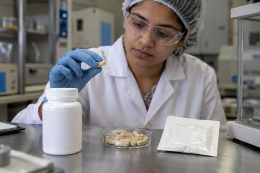
Multiple active ingredients developed with attention to compatibility, stability and dosage requirements.
Evaluate the active ingredient, intended dosage form, patient needs and target product characteristics.
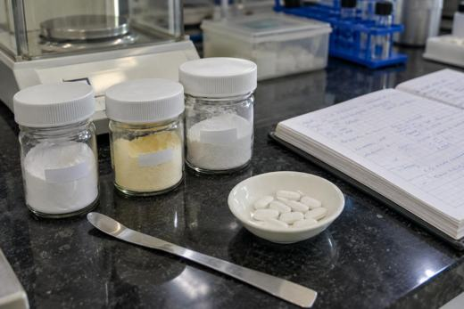
Select suitable excipients and explore formulation options through structured development trials.
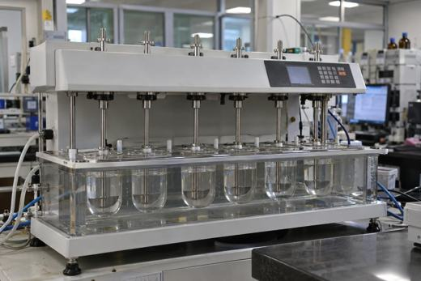
Assess relevant attributes such as dissolution, release behaviour, uniformity, compatibility and stability.
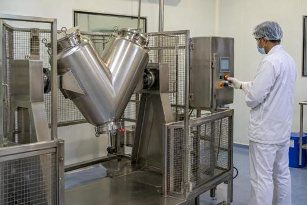
Consider process reproducibility, manufacturing suitability and technology-transfer requirements.
Define the analytical, stability and study requirements needed to support the applicable development and regulatory pathway.
A successful formulation must be practical to manufacture and consistent in its performance. Our development philosophy emphasises scientifically justified ingredient selection, documented evaluation and an understanding of the factors that influence product quality.
By addressing these considerations early, we aim to create a sound foundation for further development and commercial manufacture.
Whether your requirement involves a conventional dosage form or a complex formulation challenge, connect with Aspen Pharmaceuticals to discuss product objectives, technical feasibility and potential development opportunities.
Precision in Testing. Confidence in Quality.
At Aspen Pharmaceuticals, our quality philosophy places scientific evaluation, consistency and patient safety at the centre of every product. Quality Control supports this commitment through the sampling, inspection and testing of pharmaceutical materials and products against established specifications.
From incoming raw materials to finished dosage forms, laboratory evaluation helps verify critical quality attributes, including identity, strength, purity and product performance. These assessments provide the evidence needed to make informed decisions about material acceptance and product release.
Product quality begins with the materials used in its manufacture. Active pharmaceutical ingredients, excipients and packaging components require evaluation against approved specifications before acceptance for use.
Depending on the material, testing may include identification, assay, impurity assessment, moisture content and other relevant physical, chemical or microbiological parameters. Packaging checks assess characteristics that support product protection, compatibility and correct presentation.
Checks during manufacture help identify variations early and support consistent production. Depending on the dosage form and manufacturing stage, these may include blend uniformity, tablet weight, hardness, thickness, disintegration, pH, viscosity and fill volume.
These controls help assess whether the process is producing material with the required characteristics and whether further investigation or corrective action is needed.
Finished products are evaluated against approved specifications before a release decision is made through the authorised quality system.
Testing is selected according to the formulation and may include:
Together, these assessments help establish whether a batch meets its defined quality requirements.
Microbiological evaluation addresses the requirements of each product and its intended use. Non-sterile preparations may require microbial limit testing, while sterile products require appropriate sterility testing and, where applicable, bacterial endotoxin testing.
Laboratory results form part of a broader contamination-control system supported by suitable manufacturing practices, environmental controls and validated processes.
Stability studies evaluate how a product’s quality changes over time under defined storage conditions. Relevant parameters may include potency, degradation products, dissolution, appearance and microbiological quality.
The resulting data support proposed shelf life, storage instructions and packaging suitability, while ongoing stability monitoring helps assess continued product performance.
Reliable testing depends on suitable analytical methods, qualified equipment and trained personnel. Techniques used in pharmaceutical quality control include:
| Technique | Purpose |
|---|---|
| High-Performance Liquid Chromatography (HPLC) | Assay of active ingredients and assessment of related substances or degradation products |
| Gas Chromatography (GC) | Analysis of volatile components and residual solvents, where applicable |
| UV–Visible Spectrophotometry | Measurement of light absorption for suitable identification and quantitative tests |
| Dissolution Testing | Evaluation of drug release under specified test conditions |
| Physical Testing | Assessment of characteristics such as hardness, friability, disintegration, pH and viscosity |
| Microbiological Methods | Evaluation of microbial limits, sterility or bacterial endotoxins, as applicable |
Methods must be appropriate for their intended purpose, with validation or verification performed as required.
The value of a laboratory result depends on the integrity of the process behind it. Effective quality control requires controlled sampling, traceable records, suitable reference standards, equipment calibration and maintenance, and documented review of results.
Unexpected or out-of-specification results require investigation through established procedures. Findings should inform appropriate corrective and preventive actions and support continuous improvement.
Provides the testing and inspection evidence used to assess materials and products.
Establishes and oversees the wider system of procedures, documentation, validation, training, investigations and quality review.
Working together, these functions support consistent pharmaceutical quality. Quality Control must remain independent of production so that testing and acceptance decisions can be made objectively.
For Aspen Pharmaceuticals, quality is a responsibility carried throughout the product lifecycle. Our focus is on scientifically sound evaluation, clear documentation and accountable quality decisions that support confidence in the medicines supplied.
Aspen products are made by established manufacturing partners who share our commitment to consistent quality.
Clean-room production and automated packing at the plants that make Aspen products.
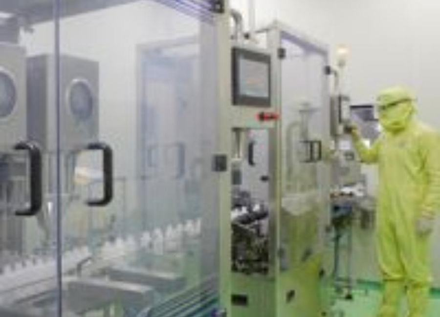
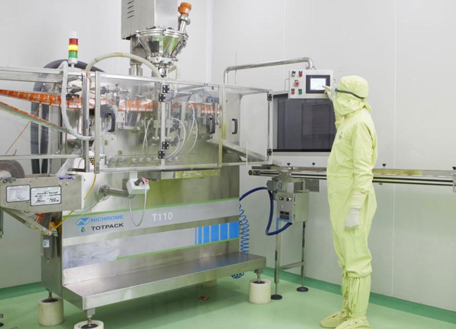
Representative images of partner facilities and equipment.
Tap any pack to see it larger.
Openings in production, quality, field sales and office roles. Grow with a team that values ideas and rewards hard work.
Aspen field teams and staff sign in through CBO ERP on the web or the CBO SFA mobile app.
Use the login ID and password issued to you by Aspen. CBO is provided by CBO ERP Ltd.
For access issues, contact HR at aspeninfo03@gmail.com